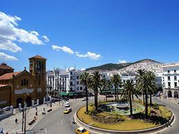

Tétouan, in addition to being a commercial city, has a robust economy based on handicrafts and light industries. It has a music school, many craft schools, national museums of archaeology and traditional arts, as well as an archival library and archive. The road network connects it to the city of Tangier (Tanger), Al-Hocema, and Ouazzane. Cereals (mostly wheat), citrus fruits (especially oranges), tea, sheep, goats, cattle, cork, and olive trees are among the agricultural goods farmed in the surrounding area . 
| nom | surface | info |
|---|---|---|
| kasbah | 5000 | La mosquée la Kasbah, doyenne des mosquées de Tétouan, reflète l'histoire de la civilisation marocaine et le rôle de ces lieux de culte dans la transmission du savoir et la préservation du style et de la beauté de l'architecture ancienne. |
| centre art | 2567 | Logé dans l’ancienne gare ferroviaire de Tétouan œuvre du célèbre architecte espagnol Julio Rodrigues Roda, inaugurée le 5 mai 1918.Le centre d’Art moderne de Tétouan (CAMT) ouvert en 2009est le fruit de de coopération entre Tétouan et le gouvernement de l’Andalousie. |
| bab okla | 675 | bab oklaFondé en 1928, ce musée fut connu tout d’abord comme « foyer musulman » ou « musée des Arts Indigènes » et avait pour siège la maison Bennouna au cœur de la Médina |